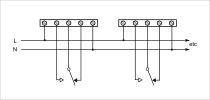

We have recently started stocking in the shop a Three Channel WiFi Relay / Thermostat Board designed by our friend Martin Harizanov.
The board has been well designed to physically separate high voltage a.c. mains from the low voltage logic. The board has an optional power supply to enable the board to be powered directly from 100-240V a.c. A wall-mountable plastic enclosure is included.
The board can be used to control a heating / AC / humidifier via local control loop from on-board sensor. The unit can be programmed with a schedule and or manually controlled via web UI via WIFI. Sensor data and relay status can be posted to Emoncms for logging and graphing.
NOTE: The board connects to and controls high voltage, knowledge and attention is required when installing to prevent electrical shock.
Overview
The relay board is a open software/hardware multi-purpose relay board based on the ESP8266 WiFi SoC. It can control up to three a.c. or d.c. loads over the Internet using web UI or MQTT.
- Powered by the popular ESP8266 WiFi SoC
- Powered direct from 230V a.c. via isolated on-board PSU (optional extra) or 5V d.c. via micro USB
- Up to three high quality 10A relays for switching a.c. or d.c. loads (see d.c. switching notes)
- Built-in web server with mobile device friendly UI and HTTP API to control the relays
- Thermostat function with weekly scheduling
- Manual relay control via the UI
- MQTT support
- NTP for network time and scheduling functionality
- Web server settings, including HTTP port and basic HTTP authentication setup
- Broadcast relay/sensor data using HTTP GET to services like ThingSpeak or Emoncms
- Integration with ThingSpeak for charting/analytics visualization
- Temperature sensor support (one of the following, not both at the same time) - (optional extra)
- DS18B20 one-wire temperature: supports multiple sensors
- DHT22 (AM2302) Humidity & Temperature
Shop:
The relay board can now be purchased direct from our shop: http://shop.openenergymonitor.com/three-channel-wifi-relay-thermostat/
Documentation & Set-up:
Full technical details and set-up guide are available on Martin's Wiki: https://harizanov.com/wiki/wiki-home/three-channel-wifi-relaythermostat-board/
Related Blog Posts:


Re: 3CH WiFi Relay Control Board
Is the case included as per the photo?
Paul
Re: 3CH WiFi Relay Control Board
It says so on the Shop page.
Re: 3CH WiFi Relay Control Board
Doh! I missed that!
I have one on order, but it hasn't arrived as yet - 'awaiting fulfillment'.
Paul
Re: 3CH WiFi Relay Control Board
Paul:
See the relay data sheet for contact life at various load currents. (I'm thinking of Jörg's comment elsewhere.)
Re: 3CH WiFi Relay Control Board
Yes, I've seen it. Martin's blog site was offline the other day so I couldn't get the relay model/spec at that time.
Regardless, they are decent quality relays, and having purchased Martin's hardware previously I'm expecting a well constructed product with a lot of potential.
Paul
Re: 3CH WiFi Relay Control Board
Shame the relay output are Natural and Switched Live, if they were just the relay contacts this would be a no brainer central heading controller. This is how most of the other "heater controllers work" just replace the thermostat switch with a digiatally controlled relay!
IE Place in next to HW tank (and existing heater controller),
Connect the tank thermostat cable to relay one.
Connect the house wall thermostat cable returns (in parallel) to relay 2 (and 3 if a two zone house).
Turn down wall thermostats to "Frost protect mode" these are now just there to give frost protection!
Place a DS18B20 on the tank to detect need for hotwater....and posibily others to detect need to heating. Or use a open source home control system.
This is a VERY simple setup, but with the relays switching Live it get a LOT harder, because you need to 100% understand the effect of wiring it in to your existing system! The safest solution is to get the relay to switch on and off a mains relay!
Re: 3CH WiFi Relay Control Board
Hi Paul,
We'll get your rely unit shipped tomorrow. Yes, case is included.
Martin has done a good job, it's a well designed hardware with impressive software. I've not yet played with ESP8266, seeing the potential and what Martin has done with it makes me want to get involved!
Re: 3CH WiFi Relay Control Board
"Shame the relay output are Natural and Switched Live" Don't you mean neutral and switched line? Both neutral and line are regarded as "live" cables unless safely isolated. And I agree, 'volt-free' contacts are much more flexible, but bringing all three terminals out to give the choice of n/o or n/c (or even changeover) would have been really smart. It looks as if it might be possible to remove the copper between the relays, and between the fuse / incoming line and the first relay, to give 3 sets of volt-free contacts, (and then solder on to the relay pins) but what a shame to risk damaging the board.
This would have been the ideal arrangement:

Re: 3CH WiFi Relay Control Board
Robert,
That would be a fantastic improvement and feature!
Is there any way / scope to persuade Martin to adopt it and produce a v2?
Re: 3CH WiFi Relay Control Board
[That's what comes from years of experience as a Systems/Project engineer!]
I suppose you could nudge Glyn or Trystan (if they haven't read this thread), or you could try to contact Martin direct, via his website.
Re: 3CH WiFi Relay Control Board
Yes, it is such a nice board with a perfect user interface and very good features. But the first thing that came to my mind as a massive restriction was the 'hard-coded' usage of the relay contacts. It would be clearly better to have access to all contacts and to be able to use them freely for AC, DC or as dry contact. In a normal household installation loads are often placed 'in series' with the (manual wall) switches and this also makes the board nearly unusable in such a situation.
But this would just need a small change to the layout.
BR, Jörg.
PS: ( Some weeks ago I tried to write a comment and order a sample at the same time on Martins web page but it was 'unresponsive' for some reason)
Re: 3CH WiFi Relay Control Board
I don't know what restrictions Martin has by way of PCB size or housings, so 5 x 10 A terminals per channel might not be possible in that box. It would still be nice to have three per channel and it might be acceptable to dispense with the separate L & N for each channel, even though sharing the incoming L & N with possibly 3 outgoing connections makes wiring harder and less secure, and is not good practice.